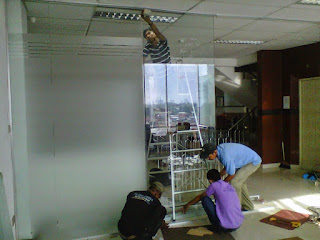
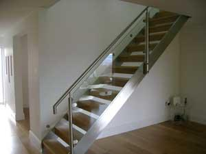
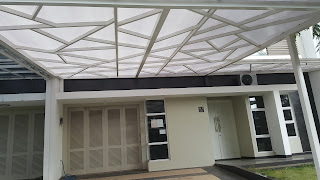

Kaca yaitu salah satu unsur yang cukup penting pada sebuah bangunan bagus untuk rumah tinggal, pertokoan, gedung bertingkat ataupun multi use building. Namun sekarang, penerapan kaca kian meluas. Berikut sedikit penjelasan yang dapat anda baca mengenai sebagai acuan and ajika akan membangun rumah maupun daerah usaha.
Tipe-ragam kaca diantara lain kaca tempered, kaca shower, railing kaca, kanopi kaca dan masih banyak lagi. Segala material hal yang demikian bisa di aplikasikan harga sebuah hunian nampak lebih cantik nyaman dan juga aman.
Jual Kaca Cermin di Sidoarjo
Kaca cermin kini tak cuma diterapkan sebagai aksesoris untuk perabotan seperti lemari rias. Kaca cermin juga dibuat untuk yang lain seperti pintu. Kini, cermin tidak hanya berbentuk persegi saja. Anda bisa tentukan desain seperti apa yang Anda inginkan. Ada cermin persegi yang ditempelkan beraturan, cermin berbentuk seperti daun, dan lain sebagainya. Jadi, Anda mempunyai banyak alternatif untuk menentukan cermin yang Anda pilih benar-benar dapat mempercantik interior rumah Anda. Sekarang perlu dilihat juga yaitu apakah Anda mau mempunyai kaca cermin Sidoarjo desain minimalis atau yang elegan.
Sekarang, ada cermin framless. Tidak hanya itu, harga yang di tawarkan sangatlah relatif murah dengan mutu dan juga mutu terbaik. Atau barangkali Anda mengharapkan kaca cermin Sidoarjo yang lantas bisa ditempel pada bagian furniture tertentu seperti pintu lemari. Sementara itu, Anda yang berada di dalam ruangan dapat memperhatikan orang lain yang ada di luar. Harga yang terjangkau dan kualitas terbaik ialah ciri khas dari dis.or.id. Dis.or.id menyediakan kaca tempered Sidoarjo yang dapat anda beli dengan harga yang betul-betul murah dan dengan kualitas terbaik. Tidak anda berminat untuk memiliki kaca tempered Sidoarjo bagus sebagai pemanis ruangan atau sebagai pintu, anda bisa langsung mengunjungi dis.or.id.
Info Pemesanan Selengkapnya
Google Maps: https://www.google.com/maps/d/u/0/viewer?mid=1HNPQwTg5M-VmcXHvNbVncTuxY7ALbdIQ&ll=-7.27380280025364%2C112.65243155000007&z=18
Note: https://www.facebook.com/notes/distributor-of-industrial-supply/pabrik-supplier-kaca-cermin/1785720801727799/
Event: https://www.facebook.com/events/135275393812568/
Distributor & Supplier Pintu Kaca

Kini telah tersedia berjenis-jenis variasi dan beragam figur pintu kaca yang sedang menjadi tren saat ini. Anda dapat pilih desain seperti apa yang Anda sukai. Ada juga pintu kaca dengan bingkai dengan desain yang berbeda seperti folding dan sliding. Kini tersebut bisa terbuat dari kayu atau aluminum. Anda tinggal tentukan saja teladan pintu kaca seperti apa yang berkeinginan Anda miliki. Kini paling banyak diminati saat ini ialah kaca tempered karena jauh lebih kuat dan tahan lama.
Dis.or.id menyediakan pintu kaca dengan beragam variasi yang bisa anda pilih pantas keperluan.
Dis.or.id juga menyiapkan beberapa macam kaca dengan ketebalan yang berbeda. Anda dapat memilih kaca tempered yang kini ini sedang naik daun.
Jasa Pemasangan Railing Kaca

Railing kaca yakni opsi yang pas saat Anda menghendakin desain interior rumah yang minimalis. Tak rumah Anda telah dibangun dengan desain minimalis, karenanya tidak salah dikala railing, entah itu railing tangga dan balkon terbuat dari kaca. Lupakan bahan seperti kayu. Pemilik rumah berharap sekali mempunyai interior yang semacam itu minimalis. Tapi, Anda wajib pastikan railing kaca berkualitas terbaik. Jika itu, dari segi keamanan, kaca tempered ini juga pas bila menjadi pilihan Anda. Malahan juga bahan yang diterapkan.
Dalam hal ini, ada banyak macam kaca yang bisa diaplikasikan untuk membuat railing ini. Anda dapat pertimbangkan untuk memakai kaca tempered. Ini macam kaca yang betul-betul kuat. Jikalau mensupport keamanan, railing kaca ini juga akan mempercantik desain interior rumah Anda. Dengan demikian, pecahan tidak akan melukai siapapun. Ini menetapkan kuatnya konstruksi railing kaca. Pastikan juga aluminum ini sangat bagus dan kuat.
Railing kaca dengan kualitas terbaik bisa anda temukan di dis.or.id.
Distributor, Supplier & Jasa Pasang Kanopi Kaca
Kanopi kaca semakin banyak diminati karena kini sudah banyak bangunan yang menggunakan bahan kaca untuk lebih mempercantik tampilan rumah. Seiring dengan perkembangan zaman di dunia properti, kini kanopi kaca terlah berkembang cepat meniru arsitektur modern . Dan sensasi mandi menjadi lebih asik untuk dinikmati. Ada banyak alternatif varian desain. Di samping pintu kaca shower akan membikin kamar mandi kecil menonjol lebih besar. Pada atap akrilik, absorpsi cahaya yang terjadi demikian kecil sehingga walaupun ketebalannya bertambah, sifat transparannya tidak banyak berubah.
Kini anda bisa menerima kanopi kaca dengan kualitas terbaik dan juga berkwalitas di dis.or.id. Sesudah kaca untuk atap kanopi cukup digemari.
Distributor & Supplier Kaca Shower
Dan sensasi mandi menjadi lebih asik untuk dirasakan. Tak cuma menawan namun kaca shower dapat menjadi kaca pembatas antara lantai kering dan berair pada kamar mandi. Di samping pintu kaca shower akan membikin kamar mandi kecil nampak lebih besar. Kita tak perlu repot lagi mencari tukang sendiri karena pemasangan alat sekat ini memang memerlukan teknik tersendiri.
Disana anda bisa mendapatkan kac shower yang sesuai dengan kemauan anda. Tak terbaik dan harga terjangkau.
Distributor, Supplier & Jasa Pasang Kanopi Kaca

Kanopi kaca semakin banyak diminati sebab kini sudah banyak bangunan yang menggunakan bahan kaca untuk lebih mempercantik tampilan rumah. Sifat utama material bahan atap akrilik juga bisa disebut atap acrylic, ini ialah warnanya yang jernih tembus pandang. Ada banyak opsi varian desain. Seandainya tembus pandang, kaca meresap sinar yang masuk sehingga semakin tebal kaca maka kian sedikit cahaya yang bisa melewatinya, karenanya sifat transparannya makin berkurang.|Di samping pintu kaca shower akan membuat kamar mandi kecil tampak lebih besar. Pada atap akrilik, absorpsi cahaya yang terjadi demikian kecil sehingga sedangkan ketebalannya bertambah, sifat transparannya tak banyak berubah. Atap akrilik atau dapat juga disebut atap kaca acrylic ini banyak ditemukan di sebuah bangunan rumah, seperti ruko, apartemen, kafe, mall, sampai bangunan gedung.
Kini anda bisa mendapatkan kanopi kaca dengan mutu terbaik dan juga bermutu di dis.or.id. Banyak bangunan seperti gedung perkantoran, perumahan, ruko dan apartement yang menerapkan kanopi kaca tempered. Apabila fungsi utama kanopi sebagai pelindung untuk bangunan hal yang demikian, pemasangan kanopi kaca juga dapat membikin bangunan menjadi kelihatan lebih menawan dan menarik, apalagi menggunakan konsep yang sama dengan konsep rumah minimalis.
Jasa Maintenance Kaca
Maintenance pada kaca sangat diperlukan supaya gedung pencakar langit milik Anda nampak bagus dan bersih. Sudah beberapa tahun, kaca gedung menjadi kusam sebab terik cahaya matahari, debu, hujan, atau kotoran lainnya. Jasa maintenance kaca juga menawarkan pelayanan pembetulan. Tak ada kaca yang rusak atau pecah, mampu untuk melakukan perbaikan mampu membersihkan bermacam-macam ragam kaca dengan ukuran, betuk, serta warna yang sesuai dengan yang Anda butuhkan. Kaca benar-benar memerlukan perawatan sebab tiap-tiap hari terkena sinar sang surya atau juga hujan. Jikalau itu, kapabel membersihkan bangunan kaca melengkung.
Dis.or.id menyiapkan semua tipe kaca layak keperluan dikala ini.
Selain hanya dalam hal membersihkan kaca, mereka juga mampu melakukan perbaikan serta penggantian kaca yang mengalami kerusakan.
Jasa Pemasangan Kaca Tempered

Dis.or.id mempunyai seluruh energi pakar yang di rekrut cuma mereka yang profesional yang tahu persis bagaimana sistem menggunakan alat dan bagaimana membersihkan kaca gedung bertingkat. Sementara itu, untuk rumah hunian, komponen dari rumah seperti kamar mandi serta kanopi umumnya terbuat dari kaca tempered. Banyak komponen properti yang dapat dibuat dengan bahan berupa kaca tempered. Untuk gedung perkantoran, komponen yang paling tak jarang dibuat dengan bahan yang satu ini yaitu jendela dan pintu. Melainkan dahulu cuma gedung perkantoran atau pusat perbelanjaan modern saja yang mengaplikasikan ragam kaca ini, kini rumah hunian juga sudah dibangun dengan kaca tempered. Selain ini tidak lain sebab kian banyak orang yang memahami kualitas serta keunggulan dari kaca tempered ini.
Dengan mangunjungi dis.or.id, anda bisa menerima dan memanfaatkan jasa kaca tempered yang sesuai dengan harapan anda. Kini dari kaca tempered dapat mengurangi bahaya cedera ketika kaca pecah karena ketika terjadi sesuatu seperti kaca pecah maka kaca tempered akan terurai menjadi butiran kecil yang relatif lebih aman dari potongan pecahan kaca biasa. Bukan sembarang alat yang diterapkan untuk memotong kaca tempered pantas dengan keperluan. Anda bisa lantas mengunjungi dis.or.id untuk menerima informasi mengenai jasa pemasangan kaca tempered, menerapkan kaca tempered dan pastinya hasil yang diberikan pun akan cocok dengan apa yang Anda inginkan.
Distributor & Supplier Pintu Lipat Kaca
Pastinya anda sudah mengenal banyak kelebihan dari kaca tempered.Seandainya ruang makan bersebelahan dengan taman, Anda bisa sekat dengan pintu lipat kaca ini. Namun diakui bahwasannya ada jenis kaca yang harganya di bawah kaca tempered. Melainkan, Sekiranya Anda hitung kembali, selisih harganya tidaklah terlalu banyak.
Timbul pertanyaan mengapa Mesti menggunakan kaca tempered. Dengan demikian, cahaya matahari di siang hari bisa masuk ke dalam ruangan. Dan dengan adanya pintu kaca ini, keamanan semakin baik. Hinges adalah aksesoris vital, sebab aksesoris inilah yang berperan untuk menopang berat pintu kaca lipat.
Jasa Pemasangan Kubikel Toilet

Jika anda mengininkan kamar mandi yang layaknya mall ataupun hotel, ada baiknya anda memakai kubikel toilet. Kubikel toilet bisa di pakai di kamar mandi mall.
Dengan mengaplikasikan WC kubikel tentnya toilet yang anda miliki Kelihatan lebih elegan dan mewan jauh dari kesan kumal. Dengan menerapkan kamar mandi kubikel pada hunian maupun gedung yang anda miliki tentunya banyak kelebihan yang anda daptkan merupakan harga kubikel yang lebih murah diperbandingkan dengan bahan konvensionel lainnya. Kecil kubikel juga memberikan hal yang efisien dan efektif dalam pembagian space kamar mandi yang kecil.
Tersedia beragam ukuran serta ketebalan dari kubikel yang dapat anda pilih layak dengan yang anda inginkan.
Karena disana terdapat berjenis-jenis ukuran kubikel kamar kecil yang dapat anda jadikan pilihan untuk hunian atau temap usaha anda. Justru embun dapat melekat di kaca dan lambat laun bisa membikin kaca tidak sejernih semula. Apabila anda ketika ini sedang memerlukan kaca shower untuk kamar mandi, langsung saja kunjungi dis.or.id untuk melakukakn pengorderan ataupun menanyakan terperinci harga dari kaca shower.
Distributor & Supplier Partisi Kaca

Partisi kaca sudah lagi dianggap sebagai hal yang aneh lagi. banyak properti yang bahan berupa kaca sebagai partisi. Anda bisa lihat di perbelanjaan modern, hotel, dan juga perkantoran. Selain itu, cara kerjanya juga tak memakan waktu sehingga Anda dapat menghembat pemasangan. Tarif ini dijalankan supaya menghemat tarif bangunan. Belum lagi biaya untuk tukang yang bisa lebih banyak tarif pembelian bahan bangunan. Alasan yang ketiga, partisi kaca ini tak menghabiskan space. Dengan harga yang amat berteman layak dengan kantong anda, Segera daripartisi kaca ini tak perlu diragukan lagi. Beberapa kunjungi dis.or.id juga. juga dengan ragam kaca. Karena macam kaca ini privacy ruangan yang disekat. Ada kaca transparan, semi transparan, dan juga kaca cemin yang membikin ruangan sangat privat. Partisi kaca dengan kwalitas terbaik dan berkualitas bisa anda temukan di dis.or.id. Disana anda bisa partisi kaca dengan harga yang amat terjangkau. Disana anda akan partisi kaca yang cocok dengan keinginan anda.